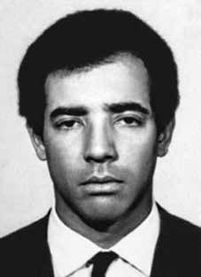

Luiz
José
da Cunha
CIRCUNSTÂNCIAS DA MORTE
Luiz José da Cunha morreu em decorrência de torturas, em 13 de julho de 1973, em São Paulo, praticadas por agentes do DOI-CODI do II Exército, nas dependências desse órgão. A versão oficial da morte de Luiz era de que ele havia sido executado por agentes do DOICODI do II Exército, em uma ação sob o comando do capitão do Exército Ênio Pimentel da Silveira, também conhecido como Dr. Ney Borges de Medeiros ou Capitão Ney e pelo então tenente da Polícia Militar do Estado de São Paulo, Carlos Elias Lotti, em São Paulo, no dia 13 de julho de 1973. A Informação no 481 – SSA/DOI-73, de 23 de agosto de 1973, do Ministério do Exército, relatou que o dirigente político portava documentos falsos, com o nome de “José Mendonça dos Santos, no momento do suposto tiroteio, mas foi identificado como sendo, de fato, Luiz José da Cunha (“Criolo”), do Comando Nacional da ALN”, e descreveu do seguinte modo as circunstâncias de sua morte: ii Por volta das 14:30 horas do dia 13 JUL 1973, elementos do DOI/CODI/II EX, quando realizavam ronda de rotina na Av. Santo Amaro, depararam com um elemento bastante parecido com LUIZ JOSÉ DA CUNHA (“CRIOLO”), da ALN, sobejamente procurado pelos Órgãos de Segurança. Ao receber voz de prisão, o referido elemento reagiu violentamente, abrindo fogo contra os agentes do DOI, utilizando uma pistola automática que portava. Após intenso tiroteio, caiu ferido, vindo a falecer quando era transportado para o Pronto Socorro Santa Paula. Essa versão oficial foi reproduzida nos Relatórios das Forças Armadas entregues ao então Ministro da Justiça, Maurício Correa, em dezembro de 1993. Segundo o Relatório do Ministério da Aeronáutica: “Luiz José da Cunha, em julho de 1973: militante da ALN. Faleceu ao reagir à ordem de prisão, ocasião em que trocou tiros com agente dia 13 de Jul 73, em São Paulo/SP”. iii Na requisição de exame necroscópico para o Instituto Médico-Legal de São Paulo, identificada com a letra “T”, que designava os militantes mortos considerados “terroristas” pelos órgãos de repressão, assinada em 13 de julho de 1973 pelos médicos-legistas Harry Shibata e Orlando José Bastos Brandão, ambos envolvidos na emissão de laudos falsos e/ou fraudulentos durante a ditadura, o histórico do caso foi descrito como: “Segundo consta, trata-se de elemento terrorista, que travou tiroteio com os Órgãos de Segurança Nacional, vindo a falecer”. iv O laudo de exame de corpo do delitov e a certidão de óbito reforçaram a versão de tiroteio e a causa morte foi registrada como “hemorragia interna ocasionada por ferimento de projétil de arma de fogo”. vi A versão oficial da morte de Luiz José da Cunha não foi questionada por seus familiares e companheiros políticos por muito tempo. A abertura dos arquivos do DOPS/SP e a obtenção de fotos do corpo de Luiz permitiram a realização de trabalho pericial que constataria a sua morte decorrente de torturas. No requerimento apresentado à CEMDP para o reconhecimento de Luiz José da Cunha como morto político, a Comissão de Familiares de Mortos e Desaparecidos Políticos, vii apontou diversas inconsistências no laudo de necropsia de Harry Shibata e Orlando Brandão, entre outras, “onze lesões apenas no rosto e nenhuma produzida por arma de fogo”, ferimentos que não foram descritos no laudo. Além disso, o laudo descrevia no campo das “vestes” de Luiz apenas “cueca de nylon amarela” e “meias pretas”, fato que, combinado com outros elementos e omissões no documento produzido pelos legistas, levou a Comissão de Familiares a concluir que, “entre o momento em que foi capturado e sua morte, Luiz foi levado a algum outro lugar, onde foi submetido a tortura.” O perito Celso Nenevê, do Instituto de Criminalística da Coordenação de Policia Técnica da Polícia Civil do Distrito Federal, recebeu as fotos do corpo de Luiz José da Cunha, encontradas no DOPS/SP, e o laudo de Luiz elaborado por Harry Shibata e Orlando Brandão. O perito demonstrou, em Parecer Criminalístico de 12 de junho de 1996, viii enviado à CEMDP em agosto de 1996, que, de fato, o laudo produzido pelos legistas apresentava fragilidades e informações inverídicas, ressaltando que as marcas de tortura eram evidentes. De acordo com o parecer de Nenevê: O quadro das lesões contusas que a vítima apresenta na face não coaduna com a terminologia „tiroteio‟ (alusão às circunstâncias em que se deu o fato que culminou com a morte de Luiz José da Cunha), uma vez que, necessariamente, indicam uma proximidade do oponente quando de suas produções. Considerando ainda o número de lesões contusas, a sede de suas produções, a presença de reação vital, e a similaridade de suas formas, infere o signatário, em consonância com o Professor França, que estas características são indícios contundentes de dominação cruel e/ou tortura, ou seja, „[…] lesões de formas idênticas, mesmo em regiões diferentes, pode-se pensar em sevícia […]‟. Segundo conclusão de Nenevê, a descrição no laudo necroscópico de Shibata e Orlando Brandão também impossibilitaria uma suposta tentativa de fuga atribuída a Luiz: […] „ferimento pérfuro-contuso transfixante no terço médio da coxa direita com fratura e desvio completo do fêmur‟, estado patológico que certamente o impossibilitaria, a partir da formação dessa lesão, de se deslocar em estado de fuga (como mencionado, ele teria se deslocado do no 2200 até o no 2000 da Av. Santo Amaro). É absolutamente lógico inferir que uma vez ferida nessa condição a citada vítima tivesse, inclusive, dificuldades de sequer se manter em pé. O Parecer Médico-legal no 102/96, de 5 de junho de 1996ix da médica-legista Maria Leonor de Souza Kühn no processo da CEMDP reforçou as conclusões de Nenevê e a desconstrução da falsa versão oficial da morte de Luiz, ao sintetizar a análise dos pontos controversos do caso: […] as múltiplas lesões na face, não relatadas no laudo, que são evidências de ação de instrumento contundente e devem corresponder à agressão, que no caso é indicativa de tortura, pois a vitima já estaria subjugada pelos agentes policiais. […] Concluindo, há fortes evidências de que a vítima foi agredida depois de subjugada, já sob custódia da polícia, seguindo-se posteriormente o seu óbito. Também foram obtidos depoimentos que auxiliaram no esclarecimento das circunstâncias relacionadas à execução perpetrada contra Luiz José da Cunha por agentes do Estado brasileiro. Em declaração prestada em 15 de abril de 1996, incluída no processo de reconhecimento de Luiz José da Cunha como morto político pela CEMDP, Fernando Casadei Salles, que estava preso no DOI-CODI do II Exército no momento da morte de Luiz, relatou que presenciou a movimentação dos policiais na ação que resultou na captura e morte do dirigente político da ALN, sob o comando do coronel Carlos Brilhante Ustra, do capitão Ney e do delegado Sérgio Fleury: x […] aos gritos de que o „Crioulo‟ já era! […], os policiais comemoravam o êxito da operação. O clima de histeria estabelecido só seria superado pela chegada da caravana, quando as comemorações atingiram níveis indescritíveis. Imediatamente, um corpo, aparentemente inerte, foi retirado de uma das peruas e, coberto com um cobertor, foi estendido em frente à porta de entrada que dava acesso aos setores de carceragem e tortura daquele organismo policial. Não obstante do meu ponto de observação não ter sido possível a visualização concreta do cadáver de Luiz José da Cunha, não tenho dúvidas em afirmar tratar-se do próprio, por ter escutado várias vezes e insistentemente referências ao seu nome. Em entrevista para a revista Veja, em 20 de maio de 1992, o ex-sargento Marival Chaves declarou que a prisão e a morte de vários militantes da ALN, entre eles Luiz José da Cunha, ocorreram em virtude da delação do ex-militante da organização, o médico João Henrique Ferreira de Carvalho, conhecido como “Jota”, infiltrado que colaborou com o DOI-CODI do II Exército a partir de 1972. xi Convocado pela Comissão Nacional da Verdade por meio do Ofício no 74, de 20 de fevereiro de 2013, João Henrique Ferreira de Carvalho foi ouvido em depoimento gravado, no dia 1 o de março de 2013, e confirmou a participação na identificação Luiz José da Cunha, o “Crioulo” para os agentes do DOI-CODI do II Exército, fato que acarretou na prisão e execução do dirigente da ALN. “Fábio” e “Cléber” são codinomes de agentes do DOI-CODI do II Exército não identificados pelo depoente, e que agiam sob o comando do “Dr. Ney”, o capitão do Exército Ênio Pimentel Silveira: Comissão Nacional da Verdade – Tá. Mas depois, quando o senhor estava colaborando, com o pessoal do DOI, o “Crioulo” foi um dos que veio a falecer depois. Você chegou a ver o “Crioulo” enquanto estava colaborando? Como o senhor, por exemplo, viu o “Baiano”, teve um algum dia que você viu o “Crioulo”? João Henrique Ferreira de Carvalho – O “Crioulo”, no dia que ele estava andando, se eu não me engano eu estava com o Fábio, e aí foi quando eu o identifiquei, se eu não me engano, ali próximo ao aeroporto, tem a Avenida São Gabriel, mais pra frente. Comissão Nacional da Verdade – Santo Amaro? João Henrique Ferreira de Carvalho – É, acho que é. Se eu não me engano foi na Avenida Santo Amaro mesmo. Na hora que houve a identificação, o que eles falaram, „agora vamos fazer a mesma coisa que foi feita com o Baiano, você volta lá e aí nós vamos ver […]‟, só que, ele já falou com raiva pra as outras equipes, enquanto eu ficava, se eu não me engano, com o Cléber, ele estava parado em uma travessa, eles foram e se encontraram com ele, e quando eu ouvi foi só os tiros. Eu não vi. Comissão Nacional da Verdade – Na Avenida Santo Amaro, você estava no carro. João Henrique Ferreira de Carvalho – Estava. Comissão Nacional da Verdade – Cobrindo um ponto […]. João Henrique Ferreira de Carvalho – Não, estava nessas andanças. Comissão Nacional da Verdade – E você o viu, identificou o “Crioulo”, segundo o senhor está dizendo, eles mantiveram o senhor no carro, com quem? João Henrique Ferreira de Carvalho – Se eu não me engano, acho que foi com o Cléber. Eu não lembro direito não. Comissão Nacional da Verdade – E depois, o senhor ficou lá e eles foram atrás dele? João Henrique Ferreira de Carvalho – Foi. Mas eles falaram com as outras equipes, comunicando. Eles saíram e me deixaram, e logo em seguida […]. Comissão Nacional da Verdade – Agora, o senhor o conhecia razoavelmente bem, porque o senhor o identificou passando de carro. João Henrique Ferreira de Carvalho – É. xii […] Comissão Nacional da Verdade – Como foi a história do Crioulo. Repete pra mim. João Henrique Ferreira de Carvalho – Nós tivemos uma vez, almoçando eu, ele e o Iuri. Foi logo no início. Eu nunca o vi nas ações. Comissão Nacional da Verdade – Mas depois que você foi preso. João Henrique Ferreira de Carvalho – Não. Foi só esse dia na rua. Eu o identifiquei e teve o tiroteio. Comissão Nacional da Verdade – Só isso? João Henrique Ferreira de Carvalho – Não chegaram nem a segui-lo nem nada, porque foi de imediato, eu não presenciei, mas foi como se eu estivesse aqui nessa rua, eu estava com o carro aqui. Dali não houve consequência de levar mais além, porque foi questão de minutos já aconteceu o tiroteio. Não houve o fato de chegarem a outra pessoa através dele. xiii Mesmo tendo a sua identidade conhecida pelos órgãos de segurança, Luiz foi sepultado como indigente no Cemitério Dom Bosco, em Perus, São Paulo (SP). O atestado de óbito trazia informações falsas, como a de que Luiz era branco. Sua ossada, incompleta, sem o crânio, foi exumada somente em 1991 e entregue à Unicamp para custódia, conservação e identificação. Maria Madalena, mãe de Luiz José da Cunha, não sobreviveu para presenciar a identificação dos restos mortais do filho. Antes de falecer ela havia fornecido sangue para que fossem realizados exames de identificação nos restos mortais de seu filho, porém, sob a responsabilidade do então chefe do Departamento de Medicina Legal da Unicamp, Badan Palhares, essa amostra de sangue foi mal conservada, o que inviabilizou os exames. Em 2001 os restos mortais de Luiz foram transferidos para o IML/SP, junto com outras ossadas encontradas na Vala de Perus. A Comissão de Familiares solicitou que os legistas da instituição efetuassem um novo exame de DNA. A identificação ocorreu apenas cinco anos depois, em 2006, após intervenção do Ministério Público Federal em São Paulo, que assegurou a contratação de um laboratório privado para realizar o exame, o que permitiu comprovar serem de Luiz José da Cunha os restos mortais analisados. O Ministério Público Federal solicitou que a sua cor no atestado de óbito fosse retificada para negra. O traslado dos restos mortais de Luiz José da Cunha começou em uma cerimônia realizada em São Paulo, em 1o de setembro de 2006, com ato na Catedral da Sé, quando a viúva de Luiz, Maria do Amparo Almeida Araújo, recebeu oficialmente a urna com os restos mortais de Luiz José. Em seguida, no Recife, foi sepultado em 2 de setembro de 2006, no dia em que completaria 63 anos, no Cemitério Parque das Flores, ao lado do túmulo de sua mãe, após velório e homenagens que recebeu na sede do Movimento Tortura Nunca Mais de Pernambuco. Em 26 de novembro de 2009, o Ministério Público Federal ajuizou Ação Civil Pública n o 2009.61.00.025169-4, que gerou o processo n o 0025169-85.2009.4.03.6100, na 6 a Vara Federal Cível de São Paulo, no qual pediu a responsabilização da União, do Estado de São Paulo, da Unicamp, da UFMG e da USP, além de cinco peritos, entre eles Badan Palhares, pela não conclusão dos trabalhos de identificação das ossadas encontradas no cemitério de Perus e pela demora na identificação de Luiz José da Cunha e de Flávio de Carvalho Molina. Na Ação Civil Pública, xiv foi apresentado como um dos fundamentos do pedido: O fato central é que os trabalhos de identificação das ossadas de Perus nunca foram realizados de maneira ágil pelo Poder Público. Os entes públicos, outrora responsáveis pelas manobras de ocultação nos cemitérios públicos de nossa cidade, pouco fizeram para reparar o erro do passado. O resultado é que o objetivo inicial de ocultação de cadáveres resta intacto, ou seja, apesar do tempo decorrido, os familiares de mortos e desaparecidos políticos continuam sendo vítimas do cruel objetivo de lhes frustrar o direito a dar um enterro digno a seus entes queridos. Luiz José da Cunha está entre as vítimas da ditadura examinadas pela Comissão Estadual da Memória e Verdade Dom Helder Câmara (CEMVDHC) de Pernambuco e pela Comissão da Verdade Rubens Paiva da Assembleia Legislativa do Estado de São Paulo. Na 105a audiência da Comissão da Verdade do Estado de São Paulo, em 10 de dezembro de 2013, Suzana Lisbôa e Darci Miyaki, em depoimento, ofereceram informações importantes sobre a morte de Luiz José da Cunha. De acordo com Suzana Lisbôa: O Fernando Casadei faz um depoimento, a meu pedido, que eu integrei no processo (da CEMDP), dizendo que ele estava preso no DOI-CODI naquele dia e que ele viu uma movimentação muito grande no pátio e o que mais chamou a atenção dele é que estavam no pátio o Fleury e o Ustra. Como na época era corrente, dentre os presos, que havia uma total rivalidade dentre eles, aquilo chamou muito a atenção. Então, tinha dezenas de carros, dezenas não, uns cinco ou seis carros saíram dali de dentro, inclusive um da Telesp, nesse dia que ele viu quando chegou o corpo do Crioulo. Então, essa movimentação durou… Em 1973, no dia em que o corpo do Crioulo chegou ao DOI-CODI, é isso que ele viu. Agora, de onde ele vinha realmente a gente não sabe. Mas que toda a busca era feita em cima, sob as ordens do Capitão Nei. Então, ele chamou muito atenção sobre isso que o Nei não era um simples operador. Ele era o cara que tinha a ordem de organizar todas as informações. Era ele que monitorava os cachorros, era ele que fazia toda essa investigação. E por isso que ele foi morto. Então, eu acho que fica, especialmente, do depoimento do Fernando Casadei também fica comprovada a participação direta do Ustra no assassinato do Luiz José da Cunha. E, não sei se ainda tem muito tempo, mas é bom a gente ressaltar que em 1979, quando eu localizei o Luiz Eurico no cemitério de Perus, nós solicitamos à Maria Madalena, mãe de Luiz José da Cunha, que nos desse uma procuração para gente movimentar o corpo do Crioulo dali. Na época, isso acabou não sendo feito”. Darci Miyaki complementou o relato sobre Luiz José da Cunha: […] Eu nasci no dia 13 de julho e eu estava na Auditoria Militar. Já tinha sido presa e nesse dia estava na Auditoria Militar. Estava aguardando a audiência. Deveria ser quinze para uma, uma hora e chegou uma equipe do DOI-CODI. Um deles vira para mim e diz o seguinte: „pegamos o filho da puta do seu amante‟. Eu já estava tensa pela audiência e foi de uma brutalidade a forma como isso foi dito que eu chorei, eu não consegui conter minhas lágrimas. Eu não sei o que eu ia falar… Eu me perdi um pouquinho… Sim, o Crioulo pelo menos foi enterrado, foi velado pelos companheiros, mas eu fico pensando nos familiares dos desaparecidos. Se eu que sei onde está enterrado o Crioulo, eu tenho sentimento em imaginar onde estão os nossos companheiros. Os outros que são considerados, são desaparecidos. Eu fico pensando comigo o que é que os familiares, os pais, os irmãos sentem sem saber o que aconteceu com eles. Porque você sendo mãe, você sendo irmã, lá no fundo da gente… A gente sabe que foi assassinado, mas lá no fundo de você mesma você tem um pouco de esperança. Quem sabe, alguém sabe que não existe, mas esses familiares não puderam velar o corpo desses companheiros. Eles não sabem o destino deles. Luiz José da Cunha, portanto, foi vítima de desaparecimento forçado e teve o seu cadáver ocultado até a sua plena identificação realizada em 2006.
Luiz José da Cunha died as a result of torture, on July 13, 1973, in São Paulo, carried out by DOI-CODI agents of the II Army, on that body's premises. The official version of Luiz's death was that he had been executed by DOICODI agents from the II Army, in an action under the command of Army Captain Ênio Pimentel da Silveira, also known as Dr. Ney Borges de Medeiros or Captain Ney and by the then lieutenant of the Military Police of the State of São Paulo, Carlos Elias Lotti, in São Paulo, on July 13, 1973. Information no. 481 – SSA/DOI-73, of August 23, 1973, from the Ministry of the Army, reported that the political leader carried false documents, with the name “José Mendonça dos Santos, at the time of the alleged shooting, but was identified as being, in fact, Luiz José da Cunha (“Criolo”), from the ALN National Command”, and described the circumstances of his death as follows: ii Around 2:30 pm on JUL 13 1973, elements of DOI/CODI/II EX, when carrying out routine patrols on Av. Santo Amaro, came across an element very similar to LUIZ JOSÉ DA CUNHA (“CRIOLO”), from ALN, highly sought after by the Security Bodies. Upon being arrested, the said element reacted violently, opening fire on the DOI agents, using an automatic pistol he was carrying. After intense shooting, he fell injured and died while being transported to the Santa Paula Emergency Room. This official version was reproduced in the Armed Forces Reports delivered to the then Minister of Justice, Maurício Correa, in December 1993. According to the Ministry of Aeronautics Report: "Luiz José da Cunha, in July 1973: ALN militant. He died while reacting to the arrest order, when he exchanged gunfire with an agent on the 13th of Jul 73, in São Paulo/SP". iii In the request for a necroscopic examination for the Medical-Legal Institute of São Paulo, identified with the letter “T”, which designated the dead militants considered “terrorists” by the repression bodies, signed on July 13, 1973 by coroners Harry Shibata and Orlando José Bastos Brandão, both involved in issuing false and/or fraudulent reports during the dictatorship, the history of the case was described as: “According to what is known, this is of a terrorist element, who fought with the National Security Organs, and died”. iv The criminal body examination report and the death certificate reinforced the shooting version and the cause of death was recorded as “internal bleeding caused by a gunshot wound”. vi The official version of Luiz José da Cunha's death was not questioned by his family and fellow politicians for a long time. The opening of the DOPS/SP files and the obtaining of photos of Luiz's body allowed the carrying out of expert work that would confirm his death as a result of torture. In the request presented to the CEMDP for the recognition of Luiz José da Cunha as a political dead, the Commission of Relatives of the Political Dead and Missing, vii pointed out several inconsistencies in the autopsy report of Harry Shibata and Orlando Brandão, among others, “eleven injuries only on the face and none caused by a firearm”, injuries that were not described in the report. Furthermore, the report described in the field of Luiz's “clothes” only “yellow nylon underwear” and “black socks”, a fact that, combined with other elements and omissions in the document produced by the coroners, led the Family Commission to conclude that, “between the moment he was captured and his death, Luiz was taken to some other place, where he was subjected to torture.” Expert Celso Nenevê, from the Criminalistics Institute of the Technical Police Coordination of the Civil Police of the Federal District, received the photos of Luiz José da Cunha's body, found at DOPS/SP, and Luiz's report prepared by Harry Shibata and Orlando Brandão. The expert demonstrated, in a Criminal Opinion of June 12, 1996, viii sent to CEMDP in August 1996, that, in fact, the report produced by the coroners presented weaknesses and untrue information, highlighting that the marks of torture were evident. According to Nenevê's opinion: The picture of blunt injuries that the victim presents on the face does not fit with the terminology 'shooting' (allusion to the circumstances in which the event that culminated in the death of Luiz José da Cunha occurred), since they necessarily indicate a proximity to the opponent during his productions. Considering also the number of blunt injuries, the place of their productions, the presence of a vital reaction, and the similarity of their forms, infers the signatory, in line with Professor França, that these characteristics are strong evidence of cruel domination and/or torture, that is, „[…] injuries of identical shapes, even in different regions, one can think of abuse […]‟. According to Nenevê's conclusion, the description in the necroscopic report of Shibata and Orlando Brandão would also make an alleged escape attempt attributed to Luiz impossible: […] „injury transfixing perforation-blunt in the middle third of the right thigh with fracture and complete displacement of the femur, a pathological condition that would certainly make it impossible, following the formation of this injury, to move in a state of flight (as mentioned, he would have moved from number 2200 to number 2000 of Av. Santo Amaro. It is absolutely logical to infer that once injured in this condition, the aforementioned victim would have had difficulty even standing up). Medical-legal opinion no. 102/96, of June 5, 1996ix by coroner Maria Leonor de Souza Kühn in the CEMDP process reinforced Nenevê's conclusions and the deconstruction of the false official version of Luiz's death, by summarizing the analysis of the controversial points of the case: [...] the multiple injuries to the face, not reported in the report, which are evidence of the action of a blunt instrument and must correspond to aggression, which in the case is indicative of torture, as the victim was already subdued by police agents. […] In conclusion, there is strong evidence that the victim was attacked after being subdued, already in police custody, followed by his death. Testimonies were also obtained that helped to clarify the circumstances related to the execution carried out against Luiz José da Cunha by agents of the Brazilian State. CEMDP, Fernando Casadei Salles, who was imprisoned in the DOI-CODI of the II Army at the time of Luiz's death, reported that he witnessed the movement of police officers in the action that resulted in the capture and death of the political leader of the ALN, under the command of Colonel Carlos Brilhante Ustra, Captain Ney and delegate Sérgio Fleury: The atmosphere of hysteria established would only be overcome by the arrival of the caravan, when the celebrations reached indescribable levels. Immediately, a body, apparently inert, was removed from one of the vans and, covered with a blanket, was laid out in front of the entrance door that gave access to the prison and torture sectors of that police body, despite having heard it several times and not being able to actually see Luiz José da Cunha's corpse. insistent references to his name. In an interview with Veja magazine, on May 20, 1992, former sergeant Marival Chaves declared that the arrest and death of several ALN militants, including Luiz José da Cunha, occurred as a result of the denunciation of the organization's former militant, doctor João Henrique Ferreira de Carvalho, known as “Jota”, an infiltrator who collaborated with the DOI-CODI of the II Army since 1992. 1972. xi Summoned by the National Truth Commission through Official Letter No. 74, dated February 20, 2013, João Henrique Ferreira de Carvalho was heard in a recorded statement, on March 1, 2013, and confirmed his participation in the identification of Luiz José da Cunha, the “Crioulo” for the DOI-CODI agents of the II Army, an event that led to the arrest and execution of the ALN leader. “Fábio” and “Cléber” are code names of DOI-CODI agents from the II Army, not identified by the deponent, and who acted under the command of “Dr. Ney”, Army captain Ênio Pimentel Silveira: National Truth Commission – Okay. But later, when you were collaborating with the DOI staff, “Crioulo” was one of those who died later. Did you get to see “Crioulo” while you were collaborating? How, for example, did you see “Baiano”, was there a time when you saw “Crioulo”? João Henrique Ferreira de Carvalho – The “Crioulo”, on the day he was walking, if I'm not mistaken I was with Fábio, and that's when I identified him, if I'm not mistaken, close to the airport, there is Avenida São Gabriel, further ahead. National Truth Commission – Santo Amaro? João Henrique Ferreira de Carvalho – Yes, I think so. If I'm not mistaken, it was on Avenida Santo Amaro. When the identification took place, what they said, 'now we're going to do the same thing that was done with Baiano, you go back there and then we'll see [...]', but he already spoke angrily to the other teams, while I was, if I'm not mistaken, with Cléber, he was standing on an alley, they went and met him, and when I heard it was just the shots. I didn't see it. National Truth Commission – On Avenida Santo Amaro, you were in the car. João Henrique Ferreira de Carvalho – He was. National Truth Commission – Covering a point […]. João Henrique Ferreira de Carvalho – No, he was on those trips. Afterwards, you stayed there and they went after him? João Henrique Ferreira de Carvalho – Yes. But they spoke to the other teams, communicating. They left and soon after […]. National Truth Commission – Now, you knew him reasonably well, because you identified him by car. We had lunch once, he and Iuri. It was right at the beginning. I never saw him at the actions. National Truth Commission – But after you were arrested. João Henrique Ferreira de Carvalho – They didn't even follow him or anything, because it happened immediately, I didn't witness it, but it was as if I was there. here on this street, I had the car here. From there there was no consequence of taking it further, because it was only a matter of minutes before the shooting took place. in 1991 and handed over to Unicamp for custody, conservation and identification. Maria Madalena, mother of Luiz José da Cunha, did not survive to witness the identification of her son's remains. Before she died, she had provided blood for identification tests to be carried out on her son's remains, however, under the responsibility of the then head of the Department of Legal Medicine at Unicamp, Badan Palhares, this blood sample was poorly preserved, which made the tests unfeasible. In 2001, Luiz's remains were transferred to the IML/SP, along with other bones found in Vala de Perus. The Family Committee requested that the institution's coroners carry out a new DNA test. The identification occurred just five years later, in 2006, after intervention by the Federal Public Ministry in São Paulo, which ensured the hiring of a private laboratory to carry out the examination, which made it possible to prove that the analyzed remains belonged to Luiz José da Cunha. The Federal Public Ministry requested that his color on the death certificate be corrected to black. The transfer of Luiz José da Cunha's mortal remains began in a ceremony held in São Paulo, on September 1, 2006, with an event at the Sé Cathedral, when Luiz's widow, Maria do Amparo Almeida Araújo, officially received the urn with Luiz José's mortal remains. Then, in Recife, he was buried on September 2, 2006, on the day he would have turned 63 years old, in Parque das Flores Cemetery, next to his mother's grave, after the wake and tributes he received at the headquarters of the Tortura Nunca Mais Movement in Pernambuco. On November 26, 2009, the Federal Public Ministry filed Public Civil Action No. 2009.61.00.025169-4, which generated case No. 0025169-85.2009.4.03.6100, in the 6th Federal Civil Court of São Paulo, in which it requested the accountability of the Union, the State of São Paulo, Unicamp, UFMG and the USP, in addition to five experts, including Badan Palhares, for not completing the identification work on the bones found in the Perus cemetery and for the delay in identifying Luiz José da Cunha and Flávio de Carvalho Molina. In the Public Civil Action, xiv was presented as one of the grounds for the request: The central fact is that the work to identify Perus' bones was never carried out quickly by the Public Authorities. Public entities, once responsible for concealment maneuvers in our city's public cemeteries, did little to repair the mistake of the past. The result is that the initial objective of hiding bodies remains intact, that is, despite the time that has passed, the families of political dead and disappeared continue to be victims of the cruel objective of frustrating their right to give their loved ones a dignified burial. Luiz José da Cunha is among the victims of the dictatorship examined by the Dom Helder Câmara State Memory and Truth Commission (CEMVDHC) of Pernambuco and by the Rubens Paiva Truth Commission of the Legislative Assembly of the State of São Paulo. At the 105th hearing of the Truth Commission of the State of São Paulo, on December 10, 2013, Suzana Lisbôa and Darci Miyaki, in testimony, offered important information about the death of Luiz José da Cunha. According to Suzana Lisbôa: Fernando Casadei made a statement, at my request, which I included in the (CEMDP) process, saying that he was arrested at DOI-CODI that day and that he saw a lot of movement in the yard and what caught his attention the most was that Fleury and Ustra were in the yard. As it was common at the time among the prisoners that there was total rivalry between them, this attracted a lot of attention. So, there were dozens of cars, not dozens, about five or six cars came out of there, including one from Telesp, that day he saw Crioulo's body when he arrived. So, this movement lasted... In 1973, on the day that Crioulo's body arrived at DOI-CODI, this is what he saw. Now, where he really came from we don't know. But the entire search was carried out above, under the orders of Captain Nei. So, he drew a lot of attention to the fact that Nei was not a simple operator. He was the guy who was ordered to organize all the information. He was the one who monitored the dogs, he was the one who did all this investigation. And that's why he was killed. So, I think that, especially from Fernando Casadei's testimony, Ustra's direct participation in the murder of Luiz José da Cunha is also proven. And, I don't know if there's still a lot of time, but it's worth highlighting that in 1979, when I located Luiz Eurico in the Perus cemetery, we asked Maria Madalena, Luiz José da Cunha's mother, to give us a power of attorney so we could move Crioulo's body from there. At the time, this ended up not being done." Darci Miyaki complemented the report about Luiz José da Cunha: [...] I was born on July 13th and I was in the Military Audit. I had already been arrested and that day I was in the Military Audit. I was waiting for the hearing. It was supposed to be a quarter to one, one o'clock and a team from DOI-CODI arrived. One of them turns to me and says the following: 'we caught your son of a bitch lover'. I was already tense by the audience and the way it was said was so brutal that I cried, I couldn't contain my tears. I don't know what I was going to say... I got a little lost... Yes, at least Crioulo was buried, he was buried by his companions, but I keep thinking about the relatives of the missing people. the brothers feel without knowing what happened to them. Because you are a mother, you are a sister, deep inside us... We know that he was murdered, but deep inside you have a little hope. Who knows, someone knows that it doesn't exist, but these family members were unable to watch over the bodies of these companions.
Luiz José da Cunha murió como consecuencia de torturas, el 13 de julio de 1973, en São Paulo, realizadas por agentes del DOI-CODI del II Ejército, en las instalaciones de ese organismo. La versión oficial sobre la muerte de Luiz fue que había sido ejecutado por agentes del DOICODI del II Ejército, en acción bajo el mando del Capitán de Ejército Ênio Pimentel da Silveira, también conocido como Dr. Ney Borges de Medeiros o Capitán Ney y por el entonces teniente de la Policía Militar del Estado de São Paulo, Carlos Elias Lotti, en São Paulo, el 13 de julio de 1973. Información no. 481 – SSA/DOI-73, de 23 de agosto de 1973, del Ministerio del Ejército, informó que el líder político portaba documentos falsos, con el nombre “José Mendonça dos Santos, en el momento del presunto tiroteo, pero fue identificado como, en realidad, Luiz José da Cunha (“Criolo”), del Comando Nacional de la ALN”, y describió las circunstancias de su muerte de la siguiente manera: ii Alrededor de las 14:30 horas del 13 de julio 1973, elementos del DOI/CODI/II EX, al realizar patrullajes de rutina en la Av. Santo Amaro, se topó con un elemento muy parecido a LUIZ JOSÉ DA CUNHA (“CRIOLO”), de la ALN, muy buscado por los Cuerpos de Seguridad. Al ser detenido, dicho elemento reaccionó violentamente, abriendo fuego contra los agentes del DOI, utilizando una pistola automática que portaba. Luego de un intenso tiroteo, cayó herido y murió mientras era transportado a la Sala de Emergencias de Santa Paula. Esta versión oficial fue reproducida en los Informes de las Fuerzas Armadas entregados al entonces Ministro de Justicia, Maurício Correa, en diciembre de 1993. Según el Informe del Ministerio de Aeronáutica: "Luiz José da Cunha, en julio de 1973: militante de la ALN. Murió reaccionando a la orden de detención, cuando intercambió disparos con un agente, el día 13 de julio de 73, en São Paulo/SP". iii En la solicitud de examen necroscópico para el Instituto Médico Legal de São Paulo, identificada con la letra “T”, que designaba a los militantes muertos considerados “terroristas” por los órganos de represión, firmada el 13 de julio de 1973 por los forenses Harry Shibata y Orlando José Bastos Brandão, ambos involucrados en la emisión de informes falsos y/o fraudulentos durante la dictadura, la historia del caso fue descrita como: “Según lo que se sabe, se trata de un terrorista elemento, que peleó con los Órganos de Seguridad Nacional, y murió”. iv El informe del examen corporal criminal y el certificado de defunción reforzaron la versión de disparo y la causa de la muerte se registró como “hemorragia interna por herida de bala”. vi La versión oficial de la muerte de Luiz José da Cunha no fue cuestionada por su familia ni por sus compañeros políticos durante mucho tiempo. La apertura de los expedientes del DOPS/SP y la obtención de fotografías del cuerpo de Luiz permitieron realizar peritajes que confirmarían su muerte como consecuencia de las torturas. En la solicitud presentada al CEMDP para el reconocimiento de Luiz José da Cunha como muerto político, la Comisión de Familiares de Muertos y Desaparecidos Políticos vii señaló varias inconsistencias en el informe de la autopsia de Harry Shibata y Orlando Brandão, entre otros, “once heridas sólo en el rostro y ninguna causada por arma de fuego”, lesiones que no fueron descritas en el informe. Además, el informe describió en el campo de la “ropa” de Luiz únicamente “ropa interior de nailon amarilla” y “calcetines negros”, hecho que, combinado con otros elementos y omisiones en el documento producido por los forenses, llevó a la Comisión de Familia a concluir que, “entre el momento de su captura y su muerte, Luiz fue trasladado a otro lugar, donde fue sometido a torturas”. El perito Celso Nenevê, del Instituto de Criminalística de la Coordinación Técnica Policial de la Policía Civil del Distrito Federal, recibió las fotografías del cadáver de Luiz José da Cunha, encontradas en el DOPS/SP, y el informe de Luiz elaborado por Harry Shibata y Orlando Brandão. El perito demostró, en Dictamen Penal del 12 de junio de 1996, viii enviado al CEMDP en agosto de 1996, que, en efecto, el informe elaborado por los forenses presentaba debilidades e información falsa, destacando que las marcas de tortura eran evidentes. Según opinión de Nenevê: El cuadro de heridas contundentes que presenta la víctima en el rostro no encaja con la terminología 'disparo' (en alusión a las circunstancias en las que ocurrió el hecho que culminó con la muerte de Luiz José da Cunha), ya que necesariamente indican una proximidad al oponente durante sus producciones. Teniendo en cuenta también el número de heridas contundentes, el lugar de sus producciones, la presencia de una reacción vital y la similitud de sus formas, el firmante infiere, en línea con el profesor França, que estas características son pruebas contundentes de dominación cruel y/o tortura, es decir, “[…] heridas de formas idénticas, incluso en regiones diferentes, se puede pensar en abuso […]”. Según la conclusión de Nenevê, la descripción en el informe necroscópico de Shibata y Orlando Brandão sería también imposibilita un supuesto intento de fuga atribuido a Luiz: […] „lesión transfixiante perforación-contundente en el tercio medio del muslo derecho con fractura y desplazamiento completo del fémur, condición patológica que ciertamente imposibilitaría, tras la formación de esta lesión, moverse en estado de fuga (como se mencionó, se habría trasladado del número 2200 al número 2000 de la Av. Santo Amaro. Es absolutamente lógico inferir que una vez herido en esta condición, la mencionada víctima habría tenido dificultad incluso para levantarse). El dictamen médico-legal n. 102/96, de 5 de junio de 1996ix, de la forense Maria Leonor de Souza Kühn en el proceso del CEMDP reforzó las conclusiones de Nenevê y la deconstrucción de la falsa versión oficial de la muerte de Luiz, al resumir el análisis de los puntos controvertidos del caso: [...] las múltiples lesiones en el rostro, no relatadas en el informe, que son evidencia de la acción de un instrumento contundente y debe corresponder a agresión, lo que en el caso es indicativo de tortura, pues la víctima ya fue sometida por agentes policiales […] En conclusión, existen pruebas contundentes de que la víctima fue sometida luego de ser sometida, ya bajo custodia policial, seguida de su muerte. También se obtuvieron testimonios que ayudaron a esclarecer las circunstancias relacionadas con la ejecución llevada a cabo contra Luiz José da Cunha por agentes del Estado brasileño, Fernando Casadei Salles, quien se encontraba privado de libertad en el DOI-CODI del II Ejército. Al momento de la muerte de Luiz, relató que presenció el movimiento de los policías en la acción que resultó en la captura y muerte del líder político de la ALN, al mando del coronel Carlos Brilhante Ustra, el capitán Ney y el delegado Sérgio Fleury: El ambiente de histeria creado sólo sería superado con la llegada de la caravana, cuando las celebraciones alcanzaron niveles indescriptibles. Inmediatamente, un cuerpo, aparentemente inerte, fue sacado de una de las camionetas y, cubierto con una manta, estaba colocado frente a la puerta de entrada que daba acceso a los sectores penitenciario y de tortura de ese cuerpo policial, a pesar de haberlo escuchado varias veces y no haber podido ver el cadáver de Luiz José da Cunha, insistentes referencias a su nombre. En una entrevista con la revista Veja, el 20 de mayo de 1992, el ex sargento Marival Chaves declaró que la detención y muerte de varios militantes de la ALN, entre ellos Luiz José da Cunha, se produjeron como consecuencia de la denuncia de la organización. El ex militante, médico João Henrique Ferreira de Carvalho, conocido como “Jota”, un infiltrado que colaboraba con el DOI-CODI del II Ejército desde 1992. 1972. xi Convocado por la Comisión Nacional de la Verdad mediante Oficio No. 74, de fecha 20 de febrero de 2013, João Henrique Ferreira de Carvalho fue escuchado en declaración grabada, el 1 de marzo de 2013, y confirmó su participación en la identificación de Luiz José da Cunha, el “Crioulo” para los agentes DOI-CODI del II Ejército, hecho que condujo a la detención y ejecución del líder de la ALN. “Fábio” y “Cléber” son nombres clave de agentes del DOI-CODI del II Ejército, no identificados por el declarante, y que actuaron bajo el mando del “Dr. Ney”, capitán del Ejército Ênio Pimentel Silveira: Comisión Nacional de la Verdad – Vale. Pero luego, cuando usted colaboraba con el personal del DOI, “Crioulo” fue uno de los que murieron después. ¿Viste “Crioulo” mientras colaborabas? ¿Cómo, por ejemplo, viste “Baiano”, hubo algún momento en que viste “Crioulo”? João Henrique Ferreira de Carvalho – El “Crioulo”, el día que caminaba, si no me equivoco estaba con Fábio, y fue entonces cuando lo identifiqué, si no me equivoco, cerca del aeropuerto, está la Avenida São Gabriel, más adelante. Comisión Nacional de la Verdad – ¿Santo Amaro? João Henrique Ferreira de Carvalho – Sí, creo que sí. Si no me equivoco fue en la Avenida Santo Amaro. Cuando se hizo la identificación, lo que dijeron, 'ahora vamos a hacer lo mismo que hicieron con Baiano, ustedes regresan para allá y luego ya veremos [...]', pero él ya hablaba enojado con los otros equipos, mientras yo estaba, si no me equivoco, con Cléber, él estaba parado en un callejón, fueron a recibirlo, y cuando escuché que eran solo los disparos. No lo vi. Comisión Nacional de la Verdad – En la Avenida Santo Amaro usted estaba en el auto. João Henrique Ferreira de Carvalho – Lo era. Comisión Nacional de la Verdad – Cubriendo un punto […]. João Henrique Ferreira de Carvalho – No, él estuvo en esos viajes. ¿Después te quedaste ahí y lo persiguieron? João Henrique Ferreira de Carvalho – Sí. Pero hablaron con los otros equipos, comunicándose. Se fueron y al poco tiempo […]. Comisión Nacional de la Verdad – Ahora bien, usted lo conocía razonablemente bien, porque lo identificó en un auto. Almorzamos una vez, él e Iuri. Fue justo al principio. Nunca lo vi en las acciones. Comisión Nacional de la Verdad – Pero después de que lo arrestaran. João Henrique Ferreira de Carvalho – Ni siquiera lo siguieron ni nada, porque pasó inmediatamente, no lo presencié, pero fue como si estuviera allí. aquí en esta calle, tenía el auto aquí. A partir de ahí no hubo consecuencia de llevarlo más lejos, porque solo era cuestión de minutos que se produjera el tiroteo. en 1991 y entregado a la Unicamp para su custodia, conservación e identificación. María Madalena, madre de Luiz José da Cunha, no sobrevivió para presenciar la identificación de los restos de su hijo. Antes de morir, había aportado sangre para pruebas de identificación de los restos de su hijo, sin embargo, bajo la responsabilidad del entonces jefe del Departamento de Medicina Legal de la Unicamp, Badan Palhares, esa muestra de sangre estaba mal conservada, lo que hizo inviables las pruebas. En 2001, los restos de Luiz fueron trasladados al IML/SP, junto con otros huesos encontrados en Vala de Perus. El Comité de Familia solicitó a los médicos forenses de la institución realizar una nueva prueba de ADN. La identificación se produjo apenas cinco años después, en 2006, tras la intervención del Ministerio Público Federal en São Paulo, que aseguró la contratación de un laboratorio privado para realizar el examen, que permitió comprobar que los restos analizados pertenecían a Luiz José da Cunha. El Ministerio Público Federal solicitó que se corrija el color del acta de defunción a negro. El traslado de los restos mortales de Luiz José da Cunha comenzó en una ceremonia celebrada en São Paulo, el 1 de septiembre de 2006, con un acto en la Catedral Sé, cuando la viuda de Luiz, Maria do Amparo Almeida Araújo, recibió oficialmente la urna con los restos mortales de Luiz José. Luego, en Recife, fue enterrado el 2 de septiembre de 2006, día en que cumpliría 63 años, en el Cementerio Parque das Flores, junto a la tumba de su madre, después del velorio y homenajes que recibió en la sede del Movimiento Tortura Nunca Mais, en Pernambuco. El 26 de noviembre de 2009, el Ministerio Público Federal interpuso la Acción Civil Pública nº 2009.61.00.025169-4, que generó la causa nº 0025169-85.2009.4.03.6100, en el 6º Juzgado Civil Federal de São Paulo, en la que solicitó la responsabilidad de la Unión, el Estado de São Paulo, la Unicamp, la UFMG y la USP, además a cinco peritos, entre ellos Badan Palhares, por no completar los trabajos de identificación de los huesos encontrados en el cementerio de Perus y por el retraso en la identificación de Luiz José da Cunha y Flávio de Carvalho Molina. En la Acción Civil Pública se presentó como uno de los fundamentos de la solicitud xiv: El hecho central es que los trabajos de identificación de los huesos de Perus nunca fueron realizados rápidamente por las Autoridades Públicas. Las entidades públicas, alguna vez responsables de las maniobras de ocultamiento en los cementerios públicos de nuestra ciudad, poco hicieron para reparar el error del pasado. El resultado es que el objetivo inicial de esconder cadáveres se mantiene intacto, es decir, a pesar del tiempo transcurrido, los familiares de muertos y desaparecidos políticos siguen siendo víctimas del cruel objetivo de frustrar su derecho a dar una sepultura digna a sus seres queridos. Luiz José da Cunha se encuentra entre las víctimas de la dictadura examinadas por la Comisión Estatal de Memoria y Verdad Dom Helder Câmara (CEMVDHC) de Pernambuco y por la Comisión de la Verdad Rubens Paiva de la Asamblea Legislativa del Estado de São Paulo. En la 105ª audiencia de la Comisión de la Verdad del Estado de São Paulo, el 10 de diciembre de 2013, Suzana Lisbôa y Darci Miyaki, en testimonio, ofrecieron importantes informaciones sobre la muerte de Luiz José da Cunha. Según Suzana Lisbôa: Fernando Casadei hizo una declaración, a pedido mío, que incluí en el proceso (CEMDP), diciendo que fue detenido en el DOI-CODI ese día y que vio mucho movimiento en el patio y lo que más le llamó la atención fue que Fleury y Ustra estaban en el patio. Como era común en aquella época entre los presos que había una rivalidad total entre ellos, esto llamó mucho la atención. Entonces, eran decenas de coches, no decenas, de allí salieron unos cinco o seis coches, entre ellos uno de Telesp, ese día vio el cuerpo de Crioulo al llegar. Entonces, este movimiento duró... En 1973, el día que el cuerpo de Crioulo llegó al DOI-CODI, esto es lo que vio. Ahora bien, no sabemos de dónde vino realmente. Pero toda la búsqueda se llevó a cabo arriba, bajo las órdenes del Capitán Nei. Entonces, llamó mucho la atención sobre el hecho de que Nei no era un simple operador. Él fue el tipo al que se le ordenó organizar toda la información. Él fue quien monitoreó a los perros, él fue quien hizo toda esta investigación. Y por eso lo mataron. Entonces, creo que, especialmente a partir del testimonio de Fernando Casadei, también queda probada la participación directa de Ustra en el asesinato de Luiz José da Cunha. Y no sé si todavía queda mucho tiempo, pero vale la pena resaltar que en 1979, cuando ubiqué a Luiz Eurico en el cementerio de Perus, le pedimos a María Madalena, la madre de Luiz José da Cunha, que nos diera un poder para poder trasladar el cuerpo de Crioulo de allí. En ese momento, eso finalmente no se hizo." Darci Miyaki complementó el relato sobre Luiz José da Cunha: [...] Nací el 13 de julio y estaba en la Auditoría Militar. Ya había sido detenido y ese día estaba en la Auditoría Militar. Estaba esperando la audiencia. Se suponía que era la una menos cuarto, la una y llegó un equipo del DOI-CODI. Uno de ellos se vuelve hacia mí y me dice lo siguiente: 'atrapamos a tu hijo de puta'. amante'. Ya estaba tenso por el público y la forma en que lo dijo fue tan brutal que lloré, no pude contener las lágrimas, no sé qué iba a decir... Me perdí un poco... Sí, al menos Crioulo fue enterrado, fue enterrado por sus compañeros, pero sigo pensando en los familiares de los desaparecidos sin saber qué pasó con ellos. tienes una pequeña esperanza, quién sabe, alguien sabe que no existe, pero estos familiares no pudieron velar por los cuerpos de estos compañeros.